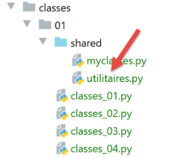

12. الفئات والكائنات
الفئة هي القالب الذي يتم من خلاله إنشاء الكائنات. ويُقال إن الكائن هو مثيل لفئة ما.

ملاحظة: تم وضع المجلد [shared] في [Root Sources] للمشروع.
12.1. النص البرمجي [classes_01]: فئة كائن
يوضح البرنامج النصي [classes_01] استخدامًا قديمًا للفئات:
ملاحظات:
- السطران 2-3: فئة [Object] فارغة؛
- السطر 2: يمكن إعلان الفئة بثلاثة أشكال:
- class Object;
- class Object();
- class Object(object);
- السطر 3: شكل آخر من أشكال التعليقات. هذا الشكل، الذي يسبقه ثلاثة ""، يمكن أن يمتد على عدة أسطر؛
- السطر 7: إنشاء مثيل لفئة Object. والنتيجة هي عنوان، كما هو موضح في الأسطر 24–26؛
- السطران 8-9: التهيئة المباشرة لخاصيتين من خصائص الكائن؛
- السطر 17: نسخ المراجع. المتغيران obj1 و obj2 هما مؤشران (مراجع) إلى نفس الكائن؛
- السطر 19: نقوم بتعديل الكائن الذي يشير إليه [obj2]. نظرًا لأن [obj1] و [obj2] يشيران إلى نفس الكائن، فإن عرض الكائنين [obj1، obj2] في السطرين 21 و 22 سيُظهر أن الكائن الذي يشير إليه [obj1] قد تغير؛
- الأسطر 24–26: تهدف هذه الأسطر إلى إثبات أن المتغيرين [obj1] و [obj2] متساويان. سيؤكد إخراج السطر 26 ذلك. في هذه المقارنة، عناوين [obj1] و [obj2] هي المتساوية؛
- يتم تحديد كل كائن في Python بواسطة معرف فريد يتم الحصول عليه باستخدام التعبير [id(object)]. ستُظهر السطران 24 و25 أن معرّفي الكائنين اللذين يشير إليهما [obj1] و[obj2] متطابقان، مما يثبت أن هذين المرجعين يشيران إلى الكائن نفسه؛
- الأسطر 27–29: تُرجع الدالة [isinstance(expr, Type)] القيمة المنطقية True إذا كان التعبير [expr] من النوع [Type]. هنا، سنرى أن [obj1] من النوع [Object]، وهو أمر يبدو طبيعيًا، ولكنه أيضًا من النوع [object]. فئة [object] هي الفئة الأم لجميع فئات Python. وبحسب خاصية وراثة الفئات، فإن الفئة الفرعية F تمتلك جميع خصائص فئتها الأم P، وتُرجع الدالة [isinstance(instance of F, P)] القيمة True؛
- الأسطر 30–32: توضح أن النوع [int] هو أيضًا نوع [object]. جميع أنواع Python مشتقة من فئة [object]؛
النتائج
C:\Data\st-2020\dev\python\cours-2020\python3-flask-2020\venv\Scripts\python.exe C:/Data/st-2020/dev/python/cours-2020/python3-flask-2020/classes/01/classes_01.py
objet1=[<__main__.Objet object at 0x0000025C3F469BB0>, <class '__main__.Objet'>,2595221838768,un,100]
objet1=[un,200]
objet1=[un,0]
objet2=[un,0]
objet1=[<__main__.Objet object at 0x0000025C3F469BB0>, 2595221838768,un,0]
objet2=[<__main__.Objet object at 0x0000025C3F469BB0>, 2595221838768,un,0]
True
type(obj1)=<class '__main__.Objet'>
isinstance(obj1,Objet)=True, isinstance(obj1,object)=True
type(4)=<class 'int'>
isinstance(4, int)=True, isinstance(4, object)=True
Process finished with exit code 0
12.2. نص برمجي [classes_02]: فئة Person
يوضح البرنامج النصي [classes_02] أن سمات الفئة عامة: يمكن الوصول إليها مباشرة من خارج الفئة. هذا مثال آخر على استخدام الفئة غير الموصى به. ومع ذلك، فقد قمنا بتضمينه لأنك قد تصادف هذا النوع من الكود أحيانًا (تسمح به لغة Python)، ويجب أن تكون قادرًا على فهمه.
ملاحظات:
- الأسطر 2–9: فئة تحتوي على طريقة؛
- السطر 7: يجب أن تحتوي كل دالة في الفئة على الكائن self، الذي يشير إلى الكائن الحالي، كمعلمة أولى لها. تُرجع الدالة [identity] سلسلة نصية؛
- السطر 15: إنشاء مثيل لكائن [Person]؛
- الأسطر 16–19: توضح أنه يمكن إنشاء سمات الكائن ديناميكيًا (فهي غير موجودة في تعريف الفئة)؛
- السطر 9: يُشار إلى سمات الفئة بالرمز [self.attribute]؛
- السطران 23-24 يوضحان أن الكائن [p] هو مثيل لكل من فئة [Person] وفئة [object]؛
النتائج
C:\Data\st-2020\dev\python\cours-2020\python3-flask-2020\venv\Scripts\python.exe C:/Data/st-2020/dev/python/cours-2020/python3-flask-2020/classes/01/classes_02.py
personne=[Paul,de la Hûche,48]
type(p)=<class '__main__.Personne'>
isinstance(Personne)=True, isinstance(object)=True
Process finished with exit code 0
12.3. البرنامج النصي [classes_03]: فئة Person مع منشئ
يوضح البرنامج النصي [classes_03] الاستخدام القياسي للفئة:
ملاحظات:
- السطر 4: يُسمى منشئ الفئة __init__. وكما هو الحال مع الطرق الأخرى، فإن المعلمة الأولى له هي self؛
- السطر 20: يتم إنشاء كائن Person باستخدام منشئ الفئة؛
- الأسطر 13–15: تُرجع الطريقة [identity] سلسلة تمثل محتوى الكائن؛
- السطر 22: يعرض هوية الشخص؛
النتائج
C:\Data\st-2020\dev\python\cours-2020\python3-flask-2020\venv\Scripts\python.exe C:/Data/st-2020/dev/python/cours-2020/python3-flask-2020/classes/01/classes_03.py
personne=[Paul,de la Hûche,48]
Process finished with exit code 0
12.4. نص برمجي [classes_04]: الطرق الثابتة
نقوم بتعريف فئة [Utils] التالية (utils.py) في المجلد [modules]:

ملاحظات
- السطر 3: تشير العلامة [@staticmethod] إلى أن الطريقة المُعلَّمة بها هي طريقة فئة، وليست طريقة مثيل. ويتضح ذلك من حقيقة أن المعلمة الأولى للطريقة المُعلَّمة ليست الكلمة الرئيسية [self]. وبالتالي، لا يمكن للطريقة الثابتة الوصول إلى سمات الكائن. بدلاً من كتابة:
نكتب
نظرًا لأننا كتبنا [Utils.is_string_ok] أعلاه، فإن الطريقة [is_string_ok] تُسمى طريقة فئة (فئة Utils في هذه الحالة). لتحقيق ذلك، يجب توضيح الطريقة [Utils.is_string_ok] باستخدام الكلمة الرئيسية [@staticmethod].
تسمح لنا الطريقة الثابتة [Utils.is_string_ok] بالتحقق هنا من أن جزءًا من البيانات عبارة عن سلسلة غير فارغة.
يستخدم البرنامج النصي [classes_04] فئة [Utils] على النحو التالي:
- الأسطر 1-4: نستخدم نصوص برمجية للتكوين؛
نص البرنامج النصي للتكوين [config.py] هو كما يلي:
- السطر 9: سيتم إضافة المجلد [shared] إلى مسار Python؛
نتيجة التنفيذ هي كما يلي:
12.5. البرنامج النصي [classes_05]: فحوصات صحة السمات
يقدم البرنامج النصي [classes_05] مفاهيم جديدة:
- تعريف نوع استثناء مخصص؛
- تعريف طريقة [_str_]، وهي طريقة الهوية الافتراضية للفئات؛
- تعريف الخصائص؛
1 2 3 4 5 6 7 8 9 10 11 12 13 14 15 16 17 18 19 20 21 22 23 24 25 26 27 28 29 30 31 32 33 34 35 36 37 38 39 40 41 42 43 44 45 46 47 48 49 50 51 52 53 54 55 56 57 58 59 60 61 62 63 64 65 66 67 68 69 70 71 72 73 74 75 76 77 78 79 80 81 82 83 84 85 86 87 88 89 90 91 92 93 94 95 96 97 98 99 100 101 102 103 104 105 106 107 108 109 110 111 112 113 114 115 116 117 | |
ملاحظات:
- الأسطر 10–13: فئة MyException مشتقة من فئة BaseException (سنغطي هذه النقطة لاحقًا). وهي لا تضيف أي وظائف إلى الأخيرة. إنها موجودة فقط لتوفير استثناء مخصص؛
- السطر 19: يحتوي المنشئ على قيم افتراضية لمعلماته. وبالتالي، فإن العملية p = Person() تعادل p = Person("x", "y", 0)؛
- الأسطر 34–45: خصائص الفئة. وهي طرق مزودة بعلامة [@property]. تُستخدم لتعيين قيم السمات؛
- الأسطر 47–77: مُعيّنات الفئة. وهي طرق مُعلّمة بالكلمة الرئيسية [@attributsetter]. تُستخدم لتعيين قيمة السمات؛
- الأسطر 48–54: أداة تعيين السمة [first_name]. سيتم استدعاء هذه الطريقة في كل مرة يتم فيها تعيين قيمة للسمة [first_name]:
السطر 2 سيؤدي إلى استدعاء [p.firstName(value)]. ميزة استخدام مُعيّن لتعيين قيمة لسمة هي أنه، بما أن المُعيّن هو دالة، يمكننا التحقق من صحة القيمة المعينة للسمة؛
- السطر 51: نتحقق من أن القيمة المعينة للسمة [first_name] هي سلسلة غير فارغة. وللقيام بذلك، نستخدم الطريقة الثابتة [Utils.isStringOk] التي رأيناها سابقًا؛
- السطر 52: يتم إزالة المسافات البيضاء في بداية ونهاية القيمة المعينة للسمة [first_name] وتعيينها إلى السمة [self.__first_name]. لذلك، لا يتم استخدام السمة [first_name] نفسها هنا. لم يكن بإمكاننا فعل غير ذلك، وإلا لكنا حصلنا على استدعاء متكرر لا نهائي. كان بإمكاننا استخدام أي اسم سمة. حقيقة أننا استخدمنا السمة [__prénom] مع شرطتين سفليتين في بداية المعرف لها معنى خاص: السمات التي تسبقها شرطتان سفليتان هي خاصة بالفئة. وهذا يعني أنها غير مرئية من خارج الفئة. لذلك، لا يمكننا كتابة:
في الواقع، سنرى قريبًا أنه يمكنك كتابة ذلك، لكنه لا يغير الاسم الأول. إنه يقوم بشيء آخر؛
- السطور 53–54: إذا كانت القيمة المعينة لـ first_name غير صحيحة، يتم إلقاء استثناء. بهذه الطريقة، سيعرف الكود المستدعي أن استدعاءه غير صحيح؛
- الأسطر 35-37: الخاصية [first_name]. سيتم استدعاؤها في كل مرة يتم فيها كتابة [p.first_name] في تعبير. سيتم بعد ذلك استدعاء الطريقة [p.first_name()]. السطر 37: نُرجع قيمة السمة [__first_name]، حيث رأينا أن مُعيّن السمة [first_name] يُعيّن قيمتها إلى السمة الخاصة [__first_name]؛
- الأسطر 56–62: يتم إنشاء مُعيّن السمة [last_name] بشكل مشابه لمُعيّن السمة [first_name]. وينطبق الأمر نفسه على مُعيّن السمة [age] في الأسطر 64–77؛
- على الرغم من أن الخصائص [first_name, last_name, value] ليست السمات الفعلية — التي هي في الواقع [__first_name, __last_name, __age] — سنستمر في الإشارة إليها على أنها سمات الفئة، نظرًا لاستخدامها على هذا النحو؛
- الأسطر 19–28: يستخدم منشئ الفئة ضمنيًا مُعيّنات الخصائص [first_name, last_name, age]. في الواقع، بكتابة [self.first_name = first_name] في السطر 26، يتم استدعاء الطريقة [first_name(self, first_name)] ضمنيًا. سيتم بعد ذلك التحقق من صحة المعلمة [first_name]. وينطبق الأمر نفسه على السمتين الأخريين [last_name، age]؛
- مع هذا النموذج، لا يمكننا تعيين قيم غير صحيحة لسمات الفئة [first_name، last_name، age]؛
- الأسطر 30-32: تحل الدالة __str__ محل الطريقة التي كانت تسمى سابقًا identity. اسم [__str__] (شرطتان سفليتان قبله وبعده) ليس عارضًا. سنرى ذلك لاحقًا؛
- الأسطر 83-86: إنشاء مثيل لشخص، يليه عرض هويته؛
- السطر 84: إنشاء مثيل؛
- السطر 86: العرض. تتطلب العملية عرض الكائن p كسلسلة. يقوم مترجم Python تلقائيًا باستدعاء الطريقة p.__str__() إذا كانت موجودة. تخدم هذه الطريقة نفس الغرض الذي تخدمه الطريقة toString() في لغات Java أو .NET؛
- الأسطر 87–89: معالجة استثناء MyException محتمل. ثم عرض الخطأ؛
- الأسطر 91–99: نفس ما سبق بالنسبة لشخص ثانٍ تم إنشاء مثيل له بمعلمات غير صحيحة؛
- الأسطر 102–109: نفس ما سبق بالنسبة لشخص ثالث تم إنشاء مثيل له بمعلمات افتراضية: لم يتم تمرير أي معلمات. ثم يتم استخدام القيم الافتراضية لهذه المعلمات في المنشئ هنا؛
- الأسطر 112–117: ذكرنا أن السمة [__first_name] كانت خاصة وبالتالي لا يمكن الوصول إليها عادةً من خارج الفئة. نريد التحقق من ذلك؛
- الأسطر 112–114: نعيّن قيمة للسمة [__first_name]، ثم نتحقق من قيم السمتين [__first_name] و[first_name]، اللتين من المفترض أن تكونا متطابقتين؛
- الأسطر 115–117: نكرر العملية، ونقوم هذه المرة بتهيئة السمة [first_name]؛
النتائج
C:\Data\st-2020\dev\python\cours-2020\python3-flask-2020\venv\Scripts\python.exe C:/Data/st-2020/dev/python/cours-2020/python3-flask-2020/classes/01/classes_05.py
personne=[Paul,de la Hûche,48]
L'âge doit être un entier >=0
personne=[x,y,0]
p.prénom=x
p.__prénom=Gaëlle
p.prénom=Sébastien
p.__prénom=Gaëlle
Process finished with exit code 0
ملاحظات
- السطران 5-6: نرى أن التعيين [p.__first_name = "Gaëlle"] لم يغير قيمة السمة [first_name]، السطر 5؛
- السطران 7-8: نرى أن التعيين [p.first_name = "Sébastien"] لم يغير قيمة السمة [__first_name]، السطر 8؛
ما الذي يمكننا استنتاجه من هذا؟ أنه من المحتمل أن العملية [p.__first_name = "Gaëlle"] أنشأت سمة عامة [__first_name] للفئة، ولكنها تختلف عن السمة الخاصة [__first_name] التي يتم التعامل معها داخلها؛
12.6. النص البرمجي [classes_06]: إضافة طريقة تهيئة كائن
يضيف البرنامج النصي [classes_06] طريقة إلى فئة [Person]:
ملاحظات:
- يكمن الاختلاف عن البرنامج النصي السابق في الأسطر 30–33. لقد أضفنا طريقة initWithPerson. تستدعي هذه الطريقة منشئ __init__. على عكس اللغات المكتوبة، لا يمكن وجود طرق تحمل نفس الاسم ويتم تمييزها حسب طبيعة معلماتها أو قيمها المرجعة. لذلك، لا يمكن وجود منشئات متعددة تنشئ الكائن من معلمات مختلفة، في هذه الحالة كائن من نوع Person؛
النتائج
C:\Data\st-2020\dev\python\cours-2020\python3-flask-2020\venv\Scripts\python.exe C:/Data/st-2020/dev/python/cours-2020/python3-flask-2020/classes/01/classes_06.py
personne=[Paul,de la Hûche,48]
L'âge doit être un entier >=0
p=[x,y,0]
p2=[x,y,0]
Process finished with exit code 0
12.7. نص برمجي [classes_07]: قائمة بكائنات Person
سنضع الآن فئتي [MyException] و [Person] في وحدة نمطية حتى نتمكن من استخدامهما دون الحاجة إلى نسخ كودهما:

ستكون كلتا الفئتين في الوحدة النمطية [myclasses.py] أعلاه.
يُظهر البرنامج النصي [classes_07] أنه يمكننا الحصول على قائمة من الكائنات:
ملاحظات:
- السطر 7: نستورد فئة [Person]؛
- السطر 11: قائمة من الكائنات من النوع [Person]؛
- السطران 13-14: نكرر هذه القائمة لعرض كل عنصر من عناصرها؛
- السطر 14: ستعرض الدالة [print] السلسلة التي تمثل الكائن [group[i]]. بشكل افتراضي، سيتم استدعاء الطريقة [__str__] لهذه الكائنات؛
النتائج
C:\Users\serge\.virtualenvs\cours-python-v02\Scripts\python.exe C:/Data/st-2020/dev/python/cours-2020/v-02/classes/01/classes_07.py
groupe[0]=[Paul,Langevin,48]
groupe[1]=[Sylvie,Lefur,70]
Process finished with exit code 0
12.8. نص برمجي [classes_08]: إنشاء فئة مشتقة من فئة Person
نحدد الفئة [Teacher] التالية في الوحدة النمطية [myclasses]:
# classe Enseignant
class Enseignant(Personne):
# constructeur
def __init__(self, prénom: str = "x", nom: str = "x", âge: int = 0, discipline: str = "x"):
# prénom : prénom de la personne
# nom : nom de la personne
# âge : âge de la personne
# discipline : discpline enseignée
# initialisation du parent
Personne.__init__(self, prénom, nom, âge)
# autres initialisations
self.discipline = discipline
# toString
def __str__(self) -> str:
return f"enseignant[{super().__str__()},{self.discipline}]"
# propriétés
@property
def discipline(self) -> str:
return self.__discipline
@discipline.setter
def discipline(self, discipline: str):
# la discipline doit être une chaîne non vide
if Utils.is_string_ok(discipline):
self.__discipline = discipline
else:
raise MyException("La discipline doit être une chaîne de caractères non vide")
- السطر 2: يعلن فئة Teacher كفئة فرعية لفئة Person. تحتوي الفئة الفرعية على جميع خصائص (السمات والطرق) فئتها الأم بالإضافة إلى خصائصها الخاصة؛
- السطر 13: تُعرّف فئة [Teacher] سمة جديدة [subject]؛
- السطر 11: يجب أن يستدعي منشئ فئة Teacher المشتقة منشئ فئة Person الأصلية، ممرراً له المعلمات التي يتوقعها؛
- السطر 17: تستدعي الدالة [super()] الفئة الأصلية. هنا، نستدعي الدالة [__str__] للفئة الأصلية؛
- الأسطر 19–30: يتم تعريف دالة الحصول (getter) ودالة التعيين (setter) للسمة الجديدة [subject]؛
يستخدم البرنامج النصي [classes_08] فئة [Teacher] على النحو التالي:
ملاحظات:
- السطر 7: نستورد فئتي [Person] و [Teacher] المحددتين في ملف [myclasses.py]؛
- الأسطر 11–14: نُعرّف مجموعة من الأشخاص ثم نعرض هوياتهم؛
النتائج
C:\Data\st-2020\dev\python\cours-2020\python3-flask-2020\venv\Scripts\python.exe C:/Data/st-2020/dev/python/cours-2020/python3-flask-2020/classes/01/classes_08.py
groupe[0]=enseignant[[Paul,Langevin,48],anglais]
groupe[1]=[Sylvie,Lefur,70]
Process finished with exit code 0
12.9. البرنامج النصي [classes_09]: الفئة الثانية المشتقة من فئة Person
يقدم البرنامج النصي [classes_09] الفئة [Student] المشتقة من الفئة [Person]. يتم تعريفها على النحو التالي في الوحدة النمطية [myclasses]:
# classe Etudiant
class Etudiant(Personne):
# constructeur
def __init__(self: object, prénom: str = "x", nom: str = "y", âge: int = 0, formation: str = "x"):
Personne.__init__(self, prénom, nom, âge)
self.formation = formation
# toString
def __str__(self: object) -> str:
return f"étudiant[{super().__str__()},{self.formation}]"
# propriétés
@property
def formation(self) -> str:
return self.__formation
@formation.setter
def formation(self, formation: str):
# la formation doit être une chaîne non vide
if Utils.is_string_ok(formation):
self.__formation = formation
else:
raise MyException("La formation doit être une chaîne de caractères non vide")
يستخدم البرنامج النصي [classes_09] فئة [Student] على النحو التالي:
ملاحظات:
- هذا البرنامج النصي مشابه للبرنامج النصي السابق.
النتائج
C:\Data\st-2020\dev\python\cours-2020\python3-flask-2020\venv\Scripts\python.exe C:/Data/st-2020/dev/python/cours-2020/python3-flask-2020/classes/01/classes_09.py
enseignant[[Paul,Langevin,48],anglais]
[Sylvie,Lefur,70]
étudiant[[Steve,Boer,22],iup2 qualité]
Process finished with exit code 0
12.10. البرنامج النصي [classes_10]: الخاصية [__dict__]
يقدم البرنامج النصي [classes_10] الخاصية [__dict__]، والتي سنستخدمها كثيرًا لاحقًا:
تعليقات
- الأسطر 1-4: يتم إعداد التطبيق؛
- السطر 7: تم استيراد فئة [Student]؛
- السطر 11: إنشاء مثيل لطالب؛
- السطر 13: استخدام الطريقة المحددة مسبقًا [__dict__] (شرطتان سفليتان قبل وبعد المعرف)؛
والنتائج هي كما يلي:
- في السطر 2، نحصل على قاموس تكون مفاتيحه هي خصائص الكائن مسبوقة باسم الفئة التي تنتمي إليها. سنستخدم هذا القاموس لإنشاء جسر بين الكائن والقاموس؛